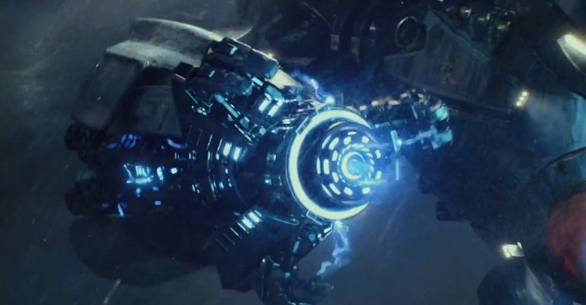

Información del Personaje
Origen: Estados Unidos
Altura: 79 metros
Peso: 1,980 toneladas
Alianza: ARMA DEFENSIVA APROBADA
Historia
Gipsy Danger es un Jaeger Mark-3, una de las unidades más icónicas de la era de la Guerra contra los Kaiju. Diseñado para el combate cuerpo a cuerpo y con un armamento de alta capacidad destructiva, este Jaeger demostró su eficacia en numerosas batallas contra amenazas kaiju. Tras la aparente disolución del programa Jaeger y el cierre de la Brecha, Gipsy Danger fue retirado de servicio y asegurado en instalaciones bajo la custodia de la Pan-Pacific Defense Corps (PPDC). Sin embargo, recientes informes indican que algunas fuerzas dentro de la PPDC desean mantener el control exclusivo del Jaeger, limitando la participación de la WKDF en su uso y despliegue.
La postura de la WKDF es clara: dado el aumento de actividad kaiju y la creciente necesidad de defensa global, Gipsy Danger debe ser un recurso accesible para todas las fuerzas de protección planetaria. Su monopolización por parte de la PPDC representa un obstáculo para la seguridad internacional y limita su potencial en situaciones de emergencia.
Gipsy Danger sigue siendo una de las mayores armas defensivas de la humanidad contra amenazas kaiju. Aunque actualmente está en reserva, su potencial sigue siendo una garantía en caso de una nueva incursión. La WKDF mantiene estrictos protocolos para su despliegue, asegurando que este recurso crítico esté disponible cuando la humanidad lo necesite nuevamente.
Imagen del Sujeto
Habilidades

Chain Sword
Espadas retráctiles extremadamente afiladas alojadas en ambos brazos, utilizadas para el combate cuerpo a cuerpo y capaces de cortar a través de la dura piel de los Kaijus.
Plasmacasters
Espadas retráctiles extremadamente afiladas alojadas en ambos brazos, utilizadas para el combate cuerpo a cuerpo y capaces de cortar a través de la dura piel de los Kaijus.
Energia Nuclear
Impulsado por un reactor nuclear, lo que le proporciona una fuente de energía confiable y la capacidad de ejecutar un ataque de sobrecarga si es necesario.
Videos de Metraje Encontrado
Video de Evidencia 1: Gipsy vs Leatherback Kaiju
Video de Evidencia 2: Gipsy vs Knifehead
Video de Evidencia 3: Gipsy vs Otachi